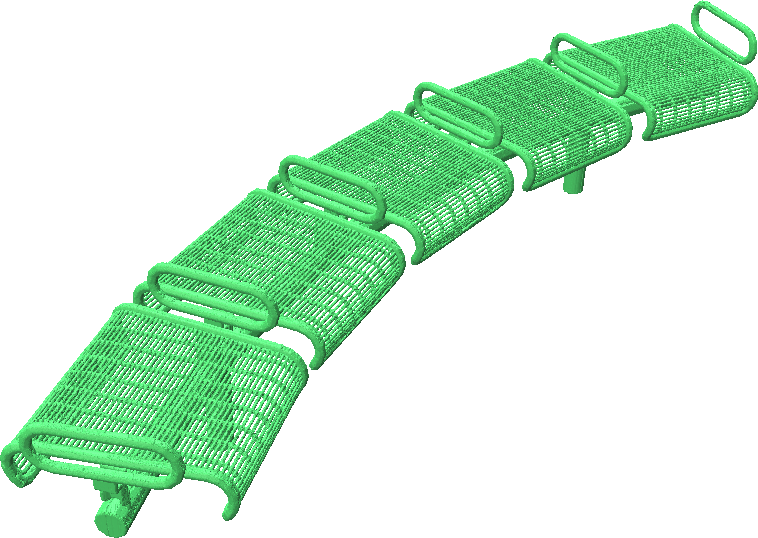

Making an SDF Dataset for ShapeNet
The code below is a simple script for making a dataset of signed distance functions for the ShapeNet Dataset. To get started, first make an account and download ShapeNet here. Once you have downloaded ShapeNet, run the script below from the root of the dataset. It loads each ShapeNet model, which may be non-watertight and non-manifold, computes a watertight and manifold mesh for that object and generates 100k points in the volume around the shape along with their corresponding signed distances. It also generates 100k points on the surface of the shape with surface normals at those points.
import os
import numpy as np
import point_cloud_utils as pcu
# Path to the bench category as an example
category_path = "./02828884"
# Resolution used to convert shapes to watertight manifolds
# Higher value means better quality and slower
manifold_resolution = 20_000
# Number of points in the volume to sample around the shape
num_vol_pts = 100_000
# Number of points on the surface to sample
num_surf_pts = 100_000
for model_path in os.listdir(category_path):
v, f = pcu.load_mesh_vf(os.path.join(category_path, model_path, "model.obj"))
# Convert mesh to watertight manifold
vm, fm = pcu.make_mesh_watertight(v, f, manifold_resolution)
nm = pcu.estimate_mesh_vertex_normals(vm, fm) # Compute vertex normals for watertight mesh
# Generate random points in the volume around the shape
# NOTE: ShapeNet shapes are normalized within [-0.5, 0.5]^3
p_vol = (np.random.rand(num_vol_pts, 3) - 0.5) * 1.1
# Comput the SDF of the random points
sdf, _, _ = pcu.signed_distance_to_mesh(p_vol, vm, fm)
# Sample points on the surface as face ids and barycentric coordinates
fid_surf, bc_surf = pcu.sample_mesh_random(vm, fm, num_surf_pts)
# Compute 3D coordinates and normals of surface samples
p_surf = pcu.interpolate_barycentric_coords(fm, fid_surf, bc_surf, vm)
n_surf = pcu.interpolate_barycentric_coords(fm, fid_surf, bc_surf, nm)
# Save volume points + SDF and surface points + normals
# Load using np.load()
npz_path = os.path.join(category_path, model_path, "samples.npz")
np.savez(npz_path, p_vol=p_vol, sdf_vol=sdf, p_surf=p_surf, n_surf=n_surf)
# Save the watertight mesh
watertight_mesh_path = os.path.join(category_math, model_path, "model_watertight.obj")
pcu.save_mesh_vfn(watertight_mesh_path, vm, fm, nm)

